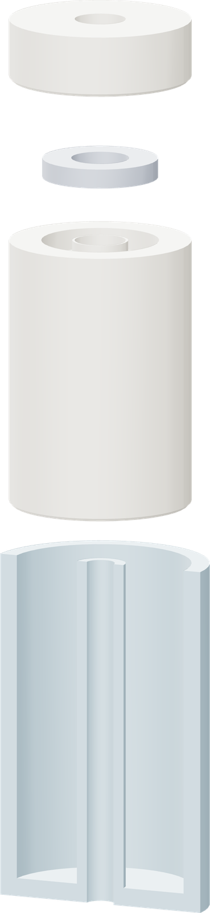

Three prints. One magnet.
A 36 mm × 60.06 mm float with a continuous PETG envelope. The printer closes the roof after the foam and magnet go in.

| Tall white core | ASA Aero, plate 1. Pocket faces upward. |
| Short white insert | ASA Aero, plate 2. Chamfered edges face downward. |
| One RC62 ring | K&J, nickel plated; 19.05 × 9.525 × 3.175 mm. |
| Clear shell | Bambu PETG Translucent Clear 32101, one plate with a programmed insertion pause. |
Clear PETG, shaded blueAero foamPart being added
Build order
Dry overnight. Print and prepare both Aero pieces. Seat the magnet on the bench. Print PETG, insert the prepared pieces at the pause, and resume. Allow about 4 h 16 min of printing, plus heating, cooling and insertion.